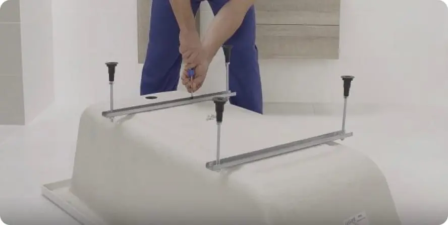
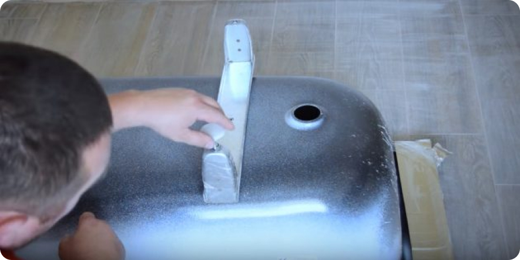
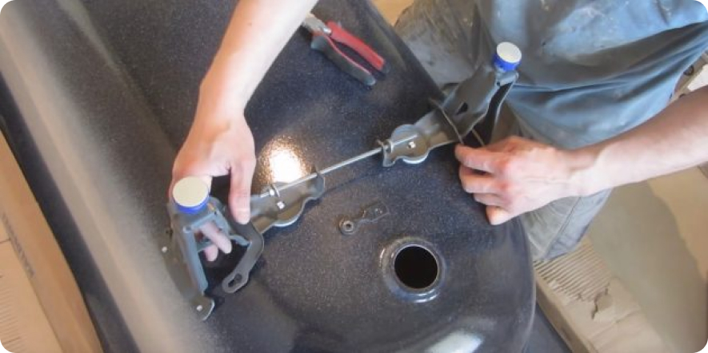
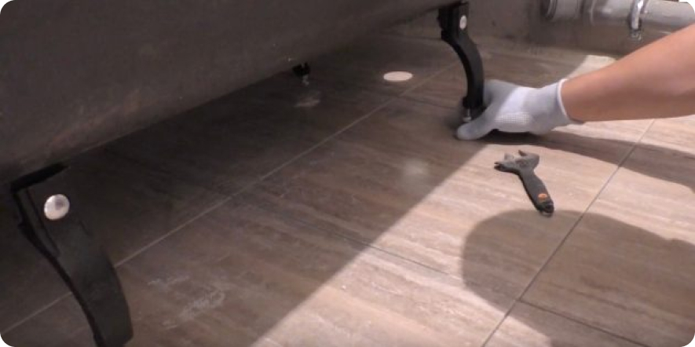
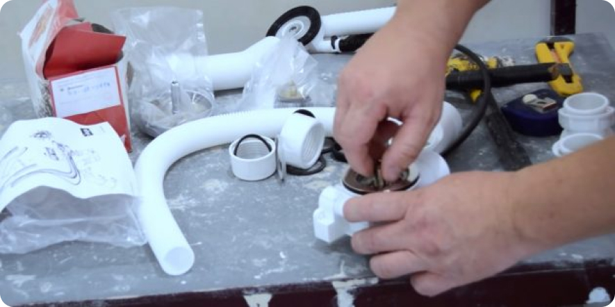

Как установить ванну своими руками
1. Какую выбрать ванну
Если предполагается замена ванны, а не перенос существующей, то нужно сразу же определиться, какую брать:
- Стальная («жестяная») дешева и легка в работе. Крепкий мужчина с рабочими навыками сантехника может установить такую в одиночку. Но недолговечна – «играет» при заливе/выпуске воды, что не идет на пользу эмали. Стальную ванну можно порекомендовать, если ванная комната маленькая и ванну можно установить вплотную к трем стенам; в таком случае деформации от знакопеременных нагрузок уменьшаются на порядок.
- Чугунная – вечная, при надлежащем обращении, но дорогая. Работать с ней очень трудно: тяжела. И дело не только в весе: посадить чугунную ванну на уже установленный сифон, не повредив его, практически невозможно. Сифон приходится крепить к ванне заранее, но, ворочая ванну его опять-таки легко повредить. Кроме того, если ванна на декоративных открытых ножках, то ее выравнивание – работа муторная, а регулируемые ножки легко ломаются от бокового усилия, например – если кто-то в ней поскользнется и шлепнется. Так что и чугунную ванну на регулируемых ножках можно рекомендовать только для установки меж трех стен.
- Пластиковые (акриловые) ванны служат до 15-20 лет. Стоит недешево, но дешевле чугунной. Работать с ней нужно вдвоем, но без надрыва, как с чугунной, и без особых сложностей. Поврежденное покрытие подновить проще, чем эмаль. Можно сказать, идеальный вариант, за исключением: в акриловую ванну недопустимо попадание агрессивных моющих средств, ни концентрированных, ни в водном растворе. В сущности, в ней можно только купаться.
О потерях тепла ванны
- Акриловая – самая экономная. Прогревается мгновенно и очень медленно остывает: пластик – плохой проводник тепла. Если на бойлере выставлена температура в 60 градусов, то для наполнения обычной полулежачей акриловой ванны водой в 40 градусов достаточно его емкости в 50 литров.
- Стальная – совсем не экономична, как может показаться. Она быстро прогревается, но и эффективно отдает тепло в пространство, в виде инфракрасного излучения. Бойлер нужен на 80 литров, или на 50-литровом нужно выставить верхний предел температуры в 80 градусов. Но при такой температуре буквально за месяц-два «сгорит» дорогой магниевый протектор в нем.
- Чугунная ванна – пожирательница калорий. И сама долго прогревается, и тепло хорошо отдает: металл все-таки. Бойлер нужен не менее чем на 100 л, а по деньгам – помывка в чугунной ванне обойдется в 1,5 раза дороже, чем в стальной, и в 2,5 раза дороже, чем в акриловой.
2. Установите ножки
Первым делом крепятся ножки, которые обычно идут в комплекте. Для этого ванну переворачивают вверх дном, не снимая упаковки с бортов, и собирают кронштейны согласно инструкции. В зависимости от материала ванны ножки и их крепление отличаются.
Акриловая ванна
У таких ванн в нижней части есть специальная вставка-усилитель из фанеры, на которую шурупами крепятся монтажные пластины, а уже к ним прикручиваются резьбовые шпильки ножек.
Нужно разметить места крепления в соответствии с инструкцией, затем просверлить отверстия для шурупов на указанную глубину и завернуть их с помощью отвёртки. Чтобы не продырявить ванну насквозь, используйте только комплектные саморезы, имеющие рассчитанную длину.
Стальная ванна
Аналоги из стали комплектуются парой опор-ложементов, которые приклеиваются на двусторонний скотч и придавливаются весом ванны. Другой вариант крепежа — четыре отдельные ножки, фиксирующиеся на специальные зацепы на дне.
В первом случае необходимо обезжирить поверхность уайт-спиритом или другим растворителем и наклеить опоры. Во втором — надеть ножки на зацепы и стянуть их между собой шпильками с гайками.
Чугунная ванна
Чугунные чаши тоже имеют четыре отдельные ножки, которые крепятся к специально отлитым на дне выступам с отверстиями под болты.
Для установки необходимо совместить ножки с выступами, зафиксировать их болтами с гайками и затянуть с помощью ключа.
В первом случае необходимо обезжирить поверхность уайт-спиритом или другим растворителем и наклеить опоры. Во втором — надеть ножки на зацепы и стянуть их между собой шпильками с гайками.
4. Соберите сливную арматуру
Сифон и система перелива имеют одинаковую конструкцию, независимо от типа ванны. Как правило, арматура поставляется вместе с ней. В противном случае нужно сразу приобрести недостающее изделие в магазине.
Изучите схему сборки, указанную в инструкции. Поставьте на свои места патрубки и заверните накидные гайки, предварительно установив на всех соединениях уплотнительные кольца. Далее на сифон надевается резиновая прокладка и вся конструкция прижимается к сливному отверстию винтом через защитную решётку.
Резюме
Самостоятельная установка ванны, особенно чугунной – тяжелый и сложный труд. Новичку можно рекомендовать самостоятельно устанавливать лишь акриловую или стальную ванну.